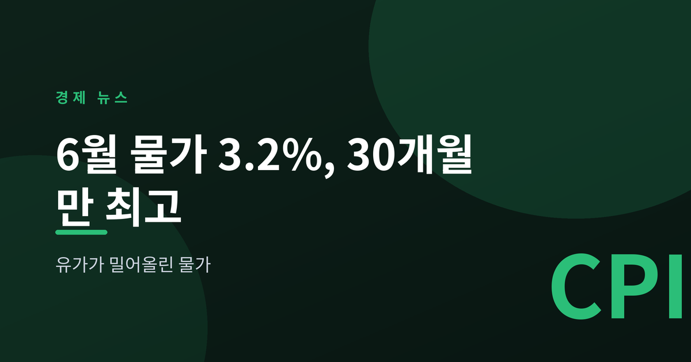
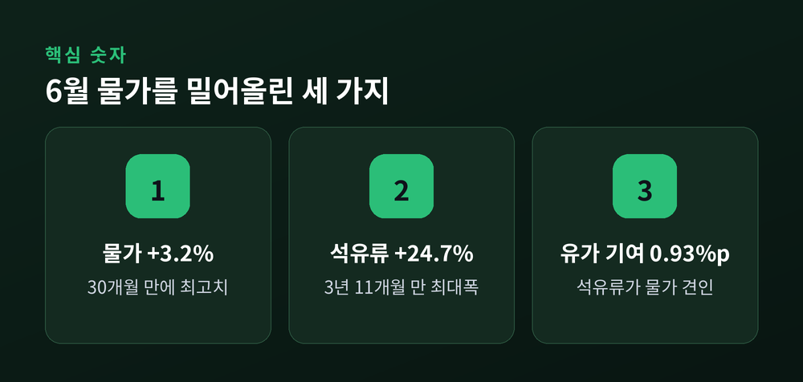
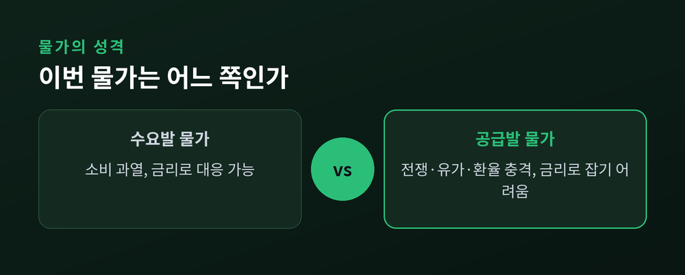
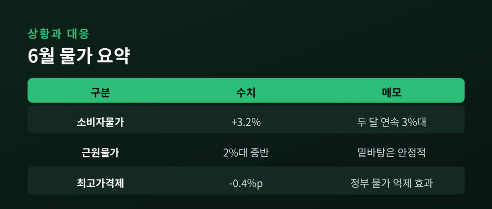

유가가 밀어올린 물가

7월 2일 6월 소비자물가 동향이 발표됐습니다. 상승률은 3.2%, 2년 6개월 만에 가장 높은 수치입니다. 오늘은 이 숫자가 무엇을 뜻하고 왜 중요한지 정리해 보겠습니다.
이 글은 정보 제공을 위한 해설이며 투자 권유가 아닙니다.
6월 소비자물가지수는 1년 전보다 3.2% 올랐습니다. 2023년 12월 이후 30개월 만에 최고치입니다.
흐름을 보면 방향이 뚜렷합니다. 물가상승률은 1·2월 2.0%로 안정적이었습니다. 그러다 3월 2.2%, 4월 2.6%, 5월 3.1%로 올라섰고, 6월 3.2%까지 이어졌습니다. 두 달 연속 3%대입니다.
주범은 석유류입니다. 석유류 가격이 1년 전보다 24.7% 뛰었습니다. 러시아·우크라이나 전쟁 초기였던 2022년 7월 이후 가장 큰 폭입니다. 석유류 하나가 전체 물가를 0.93%포인트 끌어올렸습니다.

이번 물가의 성격에 주목해야 합니다. 물가를 밀어올린 힘이 수요 과열이 아니라는 점입니다.
배경은 전쟁과 유가, 그리고 환율입니다. 중동 정세 불안으로 국제유가가 오르고, 고환율이 수입 물가를 더했습니다. 휘발유·경유뿐 아니라 공업제품 물가도 4.4% 올랐습니다.
물가의 밑바탕은 어땠을까요. 유가와 농산물처럼 출렁이는 품목을 뺀 근원물가는 2% 중반대에 머물렀습니다. 물가를 끌어올린 힘이 외부 충격에 쏠려 있다는 뜻입니다.
성격이 중요한 이유가 여기 있습니다. 공급 충격으로 오른 물가는 금리를 올린다고 쉽게 잡히지 않습니다.

정부는 대응에 나섰습니다. 석유제품 최고가격제가 6월 물가상승률을 0.4%포인트 낮췄다고 밝혔습니다. 이 제도가 없었다면 상승률은 3.6%에 달했을 것이라는 설명입니다.
7월은 다소 진정될 수 있습니다. 6월 하순 최고가격이 조정돼, 석유류 상승폭이 둔화될 것이라는 전망이 나옵니다. 상반기 누적 상승률은 2.5%였고, 정부는 하반기를 3% 이내로 관리하겠다고 했습니다.
다만 마음을 놓기는 이릅니다. 고환율이 이어지고, 컴퓨터 같은 공산품 가격도 오르고 있습니다. 유가와 환율이 다시 흔들리면 물가도 함께 움직입니다.

한편 통화정책도 고민이 깊습니다. 한국은행 기준금리는 연 2.5%에서 동결이 이어지고 있습니다. 물가가 목표를 웃도는 동안에는 금리를 낮추기가 어렵습니다. 경기와 가계부채를 생각하면 마냥 높게 둘 수도 없습니다.
정리하면 이렇습니다. 이번 물가는 우리가 많이 써서가 아니라, 밖에서 밀려든 충격에 오른 물가입니다.
— 숫자의 크기보다, 그 숫자가 어디서 왔는지가 더 중요합니다.
유가가 만든 물가라면, 유가가 잦아들 때 함께 풀릴 여지도 있습니다.